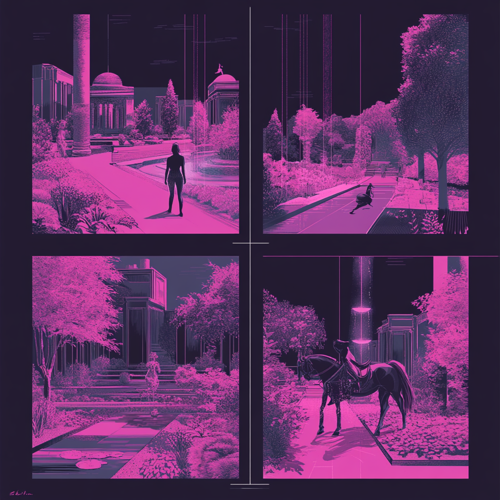

Supercharging UX with AI — from research methods to agentic product design.

The Challenge
AI has fundamentally changed how I work — not just as a time-saver, but as a new capability entirely. It's changed how I do research, how I prototype, how I design for AI-native products, and how I lead teams. For many projects, there's still a need to get up to speed in a new space very quickly. Traditionally, I would spend a lot of time reading and creating mental models of existing research and documentation. Now there's a better way.
Here's how AI has transformed my practice.
Agentic UX Design
HubSpot | 2025
Designing for AI agents is a fundamentally different discipline than traditional product design. At HubSpot, my team shipped our Agentic Setup experience — a conversational UI powered by specialized sub-agents for pipeline creation, property configuration, and goal setting that proactively builds CRM objects for customers as the conversation progresses. I guided key design decisions throughout as we built and iterated.
The harder challenge came after the initial launch: scaling the experience across all of HubSpot's service tiers. What had worked at one scale began to expose the inherent instability of building on non-deterministic technology. Edge cases that seemed rare in early testing appeared much more frequently across a larger and more varied user base. We had to rethink what quality meant — and what it meant to ship confidently when the product's behavior wasn't fully predictable.
Agentic UX requires rethinking almost every design convention:
- Conversation design replaces screen-by-screen flows
- The agent's voice, tone, and decision logic are as important as visual layout
- Prompt design is a genuine UX discipline — partnering directly with engineering to craft each sub-agent's prompt is where the conversation experience actually gets shaped
- Error handling becomes probabilistic — you design for recovery, not prevention
- Success shifts from task completion to outcome achievement
- Sub-agent handoffs need to feel seamless — the user shouldn't notice the seams between agents
AI-Powered Prototyping
One of the biggest shifts in my practice has been using Claude Code to build working prototypes — not just wireframes or static mocks, but functional, interactive experiences. Where prototyping once required either a Figma workaround or an engineering partnership, I can now take a concept from idea to interactive prototype in an afternoon.
This changes what's possible for a design leader:
- Test risky ideas before pitching them to stakeholders
- Prototype agentic and conversational flows that Figma can't easily represent
- Host working prototypes on GitHub Pages — shareable links, no engineering dependencies
- Build custom internal tools to solve design leadership problems
- Lead by example — my team sees me building, and it sets a different standard for what's expected
- Build production-quality sites — this portfolio was built entirely with Claude Code
AI-Powered Literature Reviews
AI has revolutionized my literature review process, enabling me to:
- Quickly identify the most relevant research
- Minimize the risk of "hallucinations" by sticking to specific sources
- Create diverse content types (briefing documents, FAQs, audio overviews) tailored to different learning styles
- Efficiently extract insights from multiple sources simultaneously, streamlining research and content development
AI-Powered Principles
I use a principles framework to generate product principles. Traditionally, I'll do a workshop activity with xfn partners to generate and align on these principles based on the current available research. For me, the alignment exercise is the most valuable piece of this since your team has to be aligned on what "good" means as you're making decisions.
Instead of doing a workshop I run the workshop steps through NotebookLM to generate product principles in seconds. Raw research insights can be created based on sources, then you take those insights and turn them into postulates in the categories of user context, user needs, and technological constraints. From these you can identify patterns that can be distilled into principles. This framework allows your principles to be dynamic as the project progresses — as you add new research and literature you can update the principles.
Using AI here can help you be a bit more objective from the start since the postulates are created in a more automated fashion from the source material.
Filling Gaps in Strategic Plans
AI has helped me more quickly drive strategic change by:
- Cross-referencing program/project strategy docs with organization-level objective/strategy documentation — creating suggestions of how we might align program strategy more closely to organizational objectives
- Cross-referencing program/project strategy with the current research to uncover where our strategy might conflict with what we currently know
- Creating multi-modal overviews to help me more quickly internalize the strategy
- Using audio overviews to communicate strategy out to a larger team — instead of just sharing a strategy document, sharing a podcast-style overview that people can listen to on the go
Claude Code has unlocked a different layer of this work. I've connected it directly to Google Workspace documents, spreadsheets, and slide decks via MCP servers to pull strategy content from wherever it lives. I combine that with backend data from our existing systems and Amplitude behavioral analytics — cross-referencing what we're planning against what users actually do. The result is a data-grounded strategic starting point for the team, not a strategy built on assumptions alone.
AI-Powered Storytelling
Storytelling is an absolute must in order to sell a design. It's arguably more important than the design itself. Humans make sense of the world through stories. Now you can take a flow of thoughts and ideas scribbled into a document and turn them into a polished storyboard script in seconds with Gemini. In my opinion, nothing beats something written by a human, but AI can drastically accelerate the process by giving you a draft and some structure to start.
I've also used Midjourney to generate storyboard images. This is great when you don't have the budget or time to produce your own storyboard imagery. Photoshoots and illustrators can be expensive, and using AI for image generation can be a great option.
